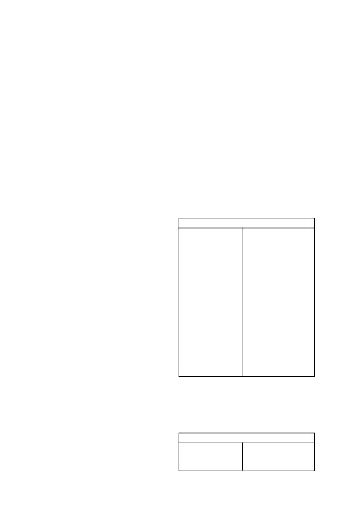

GARDOMIL GOLD
/ 2
a)
mielies en suikerriet - geen
b) graansorghum - 6 maande
c)
sonneblomme, grondbone, sojabone, aartappels, droëbone,
voersorghum en kleingraan - 18 maande
d)
alle ander gewasse - 24 maande (‘n toetsplanting word egter
aanbeveel)
e)
waar die hoeveelheid
GARDOMIL GOLD
wat toegedien is,
nie 2,2
l
/ha oorskry het nie, kan die wagperiodes onder (c)
hierbo genoem tot 9 maande verkort word, uitgesonder sand-
gronde van die Noordwes Provinsie en Noordwes Vrystaat
wat 0 - 10 % klei bevat.
•
Bogenoemde wagperiodes geld slegs indien die korrekte
hoeveelheid
GARDOMIL GOLD
per grondsoort toegedien is
en normale of bogemiddelde reënval gedurende die seisoen
waarin
GARDOMIL GOLD
toegedien is en daarna voorgekom
het.
•
Waar
GARDOMIL GOLD
toegedien word op gronde wat
uitsit by natwording en kraak of krummel by uitdroging, soos
byvoorbeeld turfgronde, mag dit veel langer aktief bly in die
grond as wat deur bostaande wagperiodes aangedui word.
Gevolglik moet
GARDOMIL GOLD
nie op sulke gronde
gebruik word nie, indien gevoelige gewasse in die voorsien-
bare toekoms daarop geplant mag word.
Op sulke gronde
mag vooropkombehandelings met
GARDOMIL GOLD
ook
swak onkruidbeheer tot gevolg hê.
•
Moet nie
GARDOMIL GOLD
op swak gedreineerde gronde
toedien of op gronde wat ‘n verdigtingslaag bevat nie, aange-
sien dit triasien-gevoelige opvolg gewasse onder versuiptoe-
stande kan beskadig.
•
Moet nie
GARDOMIL GOLD
toedien aan ingeteelde ouer-
plante van mielie- en graansorghumbasters of aan proef- of
nuutvrygestelde mielie- of graansorghumkultivars sonder om
eers die verteenwoordiger van Syngenta/verspreider of die
saadverskaffer te raadpleeg nie.
•
Ongeveer 10 - 20 mm reën of besproeiing na toediening
is nodig om
GARDOMIL GOLD
te aktiveer vir optimale
resultate. Indien reën wegbly vir langer as 2 weke kan sekere
onkruide ontkiem en sal swak of wisselvallige beheer verkry
word.
•
As gevolg van die lae adsorbsiekapasiteit van sandgronde
(0 - 15% klei), kan onkruiddoders tot sub-letale vlakke in die
boonste 50 mm van die grondprofiel verlaag word na die
voorkoms van deurdringende reën (> 25 mm per dag) met
gevolglike verswakte onkruidbeheer. Aanhoudende reën > 50
mm versprei oor 3 - 7 dae) sal ook lei tot verswakte onkruid-
beheer en moontlike gewasskade.
•
Moet nie
GARDOMIL GOLD
toedien onder stremmingstoe-
stande nie. Byvoorbeeld: versuiptoestande, droogte, baie koue
toestande, oormatige reën, swak kunsmis-toediening, lae pH,
ensovoorts. Swak beheer kan voorkom en gewasskade is ook
moontlik.
•
Lande wat gebrand is moet eers deeglik bewerk word voor-
dat
GARDOMIL GOLD
daarop toegedien word. As op die
grondoppervlakte kan lei tot die inaktivering van toegediende
onkruiddoders wat swak resultate tot gevolg kan hê.
•
As gevolg van die verskuiwing van behandelde bogrond en
loging van
GARDOMIL GOLD
op sandgronde kan sub-
optimale onkruidbeheer onder vloedbesproeiing verwag word.
•
Onder abnormale klimaatstoestande, soos byvoorbeeld oor-
matige reën kort na plant en langdurige bewolkte toestande,
kan skade tydens vroeë na-opkoms toedienings (1 - 3 blaar
van gewas) voorkom.
•
Moet nie
DUAL GOLD op swakgedreineerde gronde by
GARDOMIL GOLD
voeg nie.
Waarskuwing:
Moontlike beskadiging van triasien sensi-
tiewe gewasse.
•
Waar gronde met kalk behandel is om die pH te verhoog mag
die moontlikheid van gewas beskadiging dramaties verhoog
in gronde waar triasienes voorheen toegedien is. Dit gebeur
as gevolg van die triasien molekule wat op die klei kompleks
vervang word met kalsium katione en die triasien dus meer
beskikbaar word in die grondwater kompleks.
•
Geen triasien sensitiewe gewasse moet na kalk toedienings
geplant word nie. Dit is selfs van toepassing indien triasiene
teen wisselbou dosisse gespuit is in vorige jare. Slegs mie
lies
moet geplant word direk na kalk toedienings.
•
Triasien sensitiewe gewasse sluit in alle breëblaargewasse
soos die boon gewasse en sonneblomme asook alle klein-
graangewasse soos koring.
•
Hierdie waarskuwing waarborg egter nie dat geen skade aan
selfs mielies in die daaropvolgende aanplanting sal voorkom
nie aangesien groot volumes triasiene beskikbaar mag raak
afhangende van die volume kalk wat toegedien word en die
reënval wat kan voorkom.
Waarskuwing: Moontlike verhoogde effektiwiteit, fitotok-
sisiteit en verlengde nawerking
•
‘n Verhoging in die grond pH na vlakke bokant 7 skep toe-
stande waar verhoogde effektiwiteit en gepaardgaande verla-
ging in selektiwiteit kan voorkom. Hierdie verhoogde pH vlakke
kan ook verlengde grondnawerking tot gevolg hê wat veral
onder besproeiing die opvolg gewaskeuse mag beïnvloed.
•
Waar grond pH verstellings gedoen is, moet gelet word op die
gebruik van sulfoniel ureum onkruiddoders, triazolopirimi dien
sulfonanilied onkruiddoders en imidasolinoon onkruiddoders
wat almal baie sensitief is vir grond pH fluktuasies.
Kontak u plaaslike SYNGENTA verteenwoordiger voordat
op enige bekalkings program besluit word om gewas
keuses en gewas beskermings programme te bespreek.
5. ONKRUIDE WAT BEHEER WORD
Die volgende onkruide word normaalweg deur
GARDOMIL
GOLD
beheer teen die toedieningshoeveelhede soos hieronder
aanbeveel:
Breëblaaronkruide
Acanthospermum australe
agtsadige kruipsterklits
Acanthospermum glabratum
vyfsadige kruipsterklits
Amaranthus hybridus
gewone misbredie
Amaranthus thunbergii
rooimisbredie
Bidens bipinnata
Spaanse knapsekêrel
Bidens pilosa
knapsekêrel
Chenopodium album
withondebossie
Chenopodium carinatum
groenhondebossie
Cleome monophylla
rusperbossie
Cleome rubella
mooinooientjie
* Commelina benghalensis
Bengaalse wandelende Jood
* Cosmos bipinnatus
kosmos
Crotalaria sphaerocarpa
mielie Crotalaria
* Datura ferox
grootstinkblaar
* Datura stramonium
stinkblaar
Galinsoga parviflora
knopkruid
Gisekia pharnaceoides
Gisekia
* Hibiscus cannabinus
wildestokroos
Hibiscus trionum
terblansbossie
Nicandra physaloides
basterappelliefie
Physalis angulata
wilde-appelliefie
Portulaca oleracea
porslein
Richardia brasiliensis
tropiese Richardia
Schkuhria pinnata
kleinkakiebos
Tagetes minuta
kakiebos
*
GARDOMIL GOLD
wat vooropkom toegedien word, mag
hierdie onkruide soms onbevredigend beheer.
Al die onkruide
hierbo genoem, word doeltreffend deur
GARDOMIL GOLD
beheer wanneer dit na-opkom toegedien word.
Tesame hiermee
word ook goeie beheer van
kankerroos
(
Xanthium strumarium
),
dubbeltjie
(
Tribulus terrestris
),
purperwinde
(
Ipomoea pur-
purea
)
en
wildekomkommer
(
Cucumis myriocarpus
) verkry
wanneer
GARDOMIL GOLD
na-opkom toegedien word.
Grassoorte
Chloris virgata
witpluim-chloris
Eleusine coracona
jongosgras
Panicum schinzii
soetbuffelsgras
Setaria pallidefusca
rooiborselgras
Betroubare beheer van bogenoemde grasse word slegs ver-
kry wanneer
GARDOMIL GOLD
vooropkom toegedien word.
